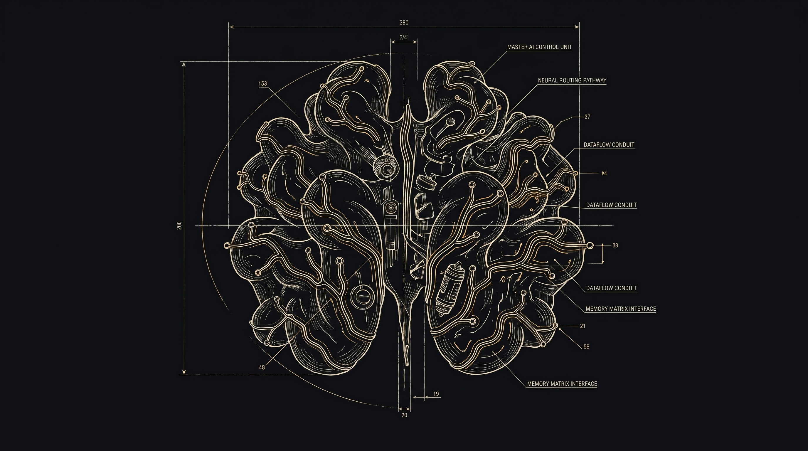

Intelligence was never artificial.
Intelligence was never artificial.

Quietly.
Not with complexity.
Not with computation.
But with potential.
A single bloom carries everything it needs to become something greater — structure, logic, growth, and evolution.
Akhrot was born from observing this process.
Not from machines.
From nature.
As the flower transforms into fruit, something important happens:
What once existed only as potential now begins organizing itself — layer by layer.
Growth becomes intentional.
Patterns begin to form.
This is how intelligence evolves.
Not instantly. But through continuous refinement.
At Akhrot, we believe intelligent systems should work the same way: learning, adapting, and becoming more meaningful over time.
Hidden. Dense. Essential.
The seed is not the outer experience.
It is the core that holds everything together.
For us, this represents the foundation of intelligence itself: the ability to process, connect, and understand.
Akhrot is built around this idea — creating systems that don't just respond to information, but organize it into meaningful patterns.
Because true intelligence is not about volume.
It's about understanding.
As the system matures, the shell forms.
Protection. Structure. Stability.
Inside, the walnut reveals something unexpectedly familiar: a form that resembles the human brain itself.
Folded. Efficient. Layered with complexity.
Nature solved intelligence long before technology attempted to replicate it.
That realization became the philosophy behind Akhrot.
What we call artificial intelligence may not be artificial at all — only a new interpretation of patterns that have always existed.
What appears organic begins to reveal something deeper: networks, structures, signals, systems.
The line between nature and technology starts to disappear.
This is the world Akhrot is building — where intelligence feels less mechanical, more intuitive, more human.
Move your cursor to reveal the network.